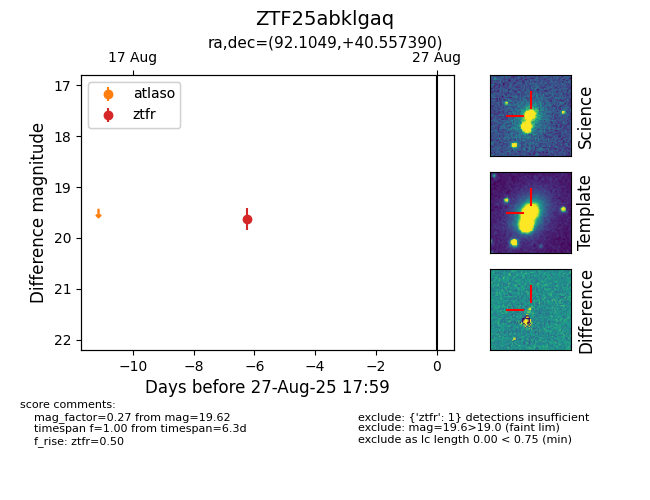

Target ZTF25abklgaq at 2025-08-26 10:53, see:
FINK: fink-portal.org/ZTF25abklgaq
Lasair: lasair-ztf.lsst.ac.uk/objects/ZTF25abklgaq
ALeRCE: alerce.online/object/ZTF25abklgaq
alt names
ZTF25abklgaq (ztf,fink)
coordinates:
equatorial (ra, dec) = (92.1049,+40.55739)
galactic (l, b) = (172.1742,+9.80580)
photometry
last ztfr=19.62
1 ztfr detections
